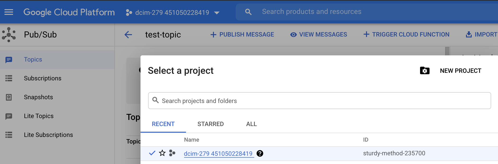

Configuring a Google Organization resource for Storage Scan
To configure a Google Organization resource for Storage Scan, follow these steps.
Step 1: Assign permissions to the organization
Create Netskope_role with permissions to the organization.
Log into Google Cloud console and go to IAM & Admin.
Select the Google organization resource you want to configure for Netskope Storage Scan.
In the left navigation panel, click Roles and click Create Role.
Provide the role title as Netskope_Role. Click Add Permissions and provide the following permissions.
iam.roles.get iam.serviceAccounts.actAs logging.sinks.get pubsub.subscriptions.create pubsub.subscriptions.delete pubsub.subscriptions.get pubsub.topics.attachSubscription resourcemanager.folders.get resourcemanager.organizations.get storage.buckets.get storage.buckets.list storage.objects.get Storage.objects.list resourcemanager.organizations.get resourcemanager.folders.get resourcemanager.projects.get storage.objects.getIamPolicy storage.buckets.getIamPolicy
Enter each permission in the Enter property name or value text box. Select the permission and click Add.

After adding the permissions, click Create to create Netskope_Role.
Step 2: Create a service account for the organization
Create a service account for the organization and download the private key. This key will be required when setting up the instance in your Netskope tenant.
Select any project within the organization's folder and create a service account for the project. To do this, in the left navigation panel, click Service Accounts > Create Service Account.
Provide a name for the service account and click Create and Continue. Click Continue without granting access or permissions to the project. Then click Done without granting user access to the service account.
On the Service accounts page, click the service account you created and select on the Keys tab.
Click Add Key and from the drop-down list click Create new key.
In the Create private key for <service account> dialog box, select the key type as JSON and click Create. The private key is downloaded to your computer.
Click Close.
Step 3: Add the service account as an IAM member of the organization
Select the organization and add the service account as an IAM member with Netskope_Role role.
Select the Details tab of the service account and copy the email address. This service account must be added as an IAM member in the organization you are setting up for storage scan.
Select the organization you are setting up for storage scan. In the left navigation panel, click IAM and click Add.
In the IAM page, click Add. Paste the service account email address in the New member text box of Add members to <organization> window.
Click Select a role and select Netskope_Role. Click Save.
Step 4: Create an aggregated log sink router
Create a Pub/Sub topic with permissions to enable the service account to generate JWT tokens. Then create an aggregated log sink router, ns_sink so that Netskope can send and receive notifications.
Select the project for which you created the service account. Click the hamburger icon in the left navigation panel and click Pub/Sub under Big Data.
On the Topics page, click Create Topic. Provide a Topic ID and click Create Topic.
Provide permissions to the Pub/Sub so that the service account can create JWT tokens. Open Cloud Shell and in the terminal run the following command to provide permissions.
gcloud projects add-iam-policy-binding <project_id> --member=serviceAccount:service-<project_number>@gcp-sa-pubsub.iam.gserviceaccount.com --role='roles/iam.serviceAccountTokenCreator'
To get the <project_id>, click on the project at the top of the page. The Select from window displays the project name and ID.
To get the <project_number>, in the Select from window click on the project name. The project dashboard displays the Project info which contains the project number.
Create an aggregated log sink to send and receive notifications from Netskope. In the Cloud Shell terminal run the following command.
gcloud logging sinks create ns_sink pubsub.googleapis.com/<pubsub_topic_ID> --log-filter=<log_filter> --include-children --organization=<org_ID>
To get the <pubsub_topic_ID>,
In the left navigation panel go to Big Data > Pub/Sub and click the Pub/Sub topic you created in step 2.
Copy the Topic name under Topic details. For example,
projects/sturdy-method-235700/topics/test-topic.
To get the <org_ID>, click on the project at the top of the page. In the Select from window click on the All tab and click on the organization that the project is under. The organization name has an accompanying ID.
Add the following log filters in the command above.
(resource.type=folder AND (protoPayload.methodName=CreateFolder OR protoPayload.methodName=DeleteFolder)) OR (resource.type=project AND (protoPayload.methodName=CreateProject OR protoPayload.methodName=DeleteProject)) OR (resource.type=gcs_bucket AND (protoPayload.methodName=storage.objects.delete OR protoPayload.methodName=storage.objects.create OR protoPayload.methodName=storage.buckets.create OR protoPayload.methodName=storage.buckets.delete))
After running the command successfully, you must add the service account in the organization's IAM role. To do this,
Copy the service account address from the CLI output in the terminal.
Select the organization at the top of the page and in the left navigation panel, click IAM and click Add.
In the Add members to <organization> window, paste the service account address you copied previously in the New member text box.
Click Select a role and search for Pub/Sub Publisher role. Select the role and click Save.
Step 5: Enable Audit Logs for Cloud Storage in the organization
With the organization selected from the top of the page, in the left navigation panel, click Audit logs under IAM & Admin.
On the Audit Logs page, search for Google Cloud Storage and select the service.
In the Google Cloud Storage pane on the right side, select Data Write in the Log Type tab. Click Save.
Step 6: Enable Google Cloud APIs for the project
Allow Netskope to make API calls to the project resource by enabling the Google Cloud APIs for the project.
Copy the project ID and connect to the following two URLs to enable the Identity and Access Management (IAM) API, and Cloud Resource Manager API.
https://console.developers.google.com/apis/api/iam.googleapis.com/overview?project=<project-id> https://console.developers.google.com/apis/api/cloudresourcemanager.googleapis.com/overview?project=<project-id>
Step 7: Setup the Google organization instance in your Netskope tenant
Now you can set up the Google organization instance for storage scan in your Netskope tenant using the credentials of the service account to which the Netskope_Role is attached.
Log in to the Netskope tenant UI and navigate to Settings > API Data Protection > IaaS.
Click the Google Cloud Platform icon and then click SETUP.
The New Setup window opens.
Under the GCP Service Account section, enter the following details:
Instance Name: Enter a name for the Google Cloud Platform instance.
Admin Email: Enter the email address of the Google Cloud Platform account owner.
Note
You can enter any email address here. Netskope sends notifications to this email address.
Connection Type: Select DLP Scan or Threat Protection (Malware) options to scan storage resources for DLP violations and malware.
Note
Few of the instance type options may be disabled. Contact your Netskope sales representative for additional information.
In the Cloud Provider Information section, enter the following details:
Under the Upload section, click SELECT FILE and upload the private key JSON file that you downloaded in Step 2: Create a service account for the organization.
Click SAVE.
On the API Data Protection > IaaS page, click the Google Cloud Platform icon.
Click Grant Access beside the newly created instance.
Refresh your browser, and you will see a green check icon next to the Google Cloud Platform instance name.